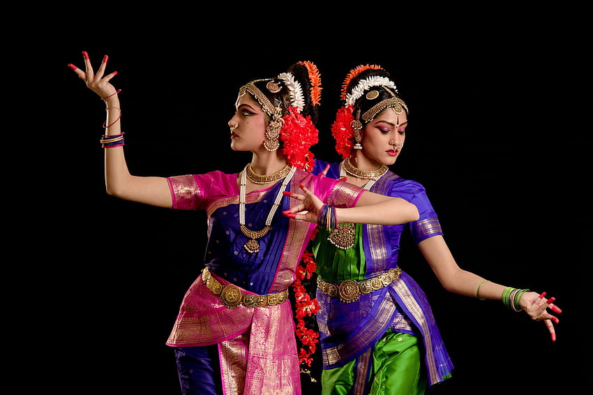

Culture
in
Nellore
Andhra Toursims
The majority of the population in Nellore follows Hinduism. Hindu temples are an integral part of the city’s cultural landscape, and religious festivals are celebrated with great enthusiasm. Some of the prominent temples in Nellore include Sri Ranganathaswamy Temple, Jonnawada Kamakshi Temple, and Penchalakona Temple.
Diwali, also known as Deepavali, is a significant Hindu festival celebrated with great enthusiasm and joy in Nellore, a city located in the state of Andhra Pradesh, India. Diwali is one of the most important festivals in the Hindu calendar and is observed by Hindus worldwide. It typically falls between mid-October and mid-November, depending on the lunar calendar.Diwali holds immense cultural and religious significance for the people of Nellore. The festival signifies the victory of light over darkness and good over evil. It is believed to commemorate Lord Rama’s return to Ayodhya after defeating the demon king Ravana. The festival also marks the beginning of the Hindu New Year and is associated with various mythological stories and legends.

Kuchipudi Dance: This is a classical dance form that originated in the village of Kuchipudi, which is near Nellore. It is a highly expressive dance style that combines intricate footwork, graceful movements, and elaborate costumes. The dancers use hand gestures, facial expressions, and body language to convey emotions and tell stories from Hindu mythology.Bharatanatyam Dance: This is another popular classical dance form that is widely performed in Nellore. It is characterised by intricate footwork, complex hand gestures, and expressive facial expressions. The dance style emphasises the importance of perfect alignment, balance, and control, and it is often performed to devotional songs and Carnatic music.
In Nellore, Rangoli is predominantly created during festivals like Diwali, Pongal, Navratri, and Sankranti. These festivals are celebrated with great enthusiasm and fervor by the local community. Rangoli designs vary in complexity and style, ranging from simple geometric patterns to intricate depictions of deities, flowers, peacocks, or other traditional motifs. During Diwali, which is also known as the Festival of Lights, Rangoli holds special significance. It is believed that creating Rangoli at the entrance of homes brings good luck and prosperity. People use vibrant colors like red, yellow, green, blue, and white to create eye-catching designs. The patterns are often embellished with diyas (oil lamps) to enhance their beauty.